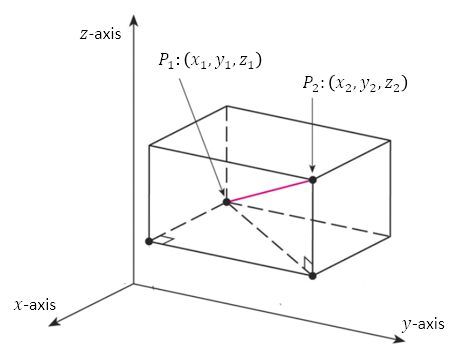

Distance in Space
The spatial location of a point requires three pieces of information, described via three real numbers. In this sense space is three-dimensional and often referred to as \(\mathbb{R}^3\).
In the following diagram, the distance between points \(P_1\) and \(P_2\) can be found via the distance formula. In \(\mathbb{R}^3\) this expression is given below.
Distance Formula in \(\mathbb{R}^3\)
\[ d = \sqrt{(x_2 - x_1)^2 + (y_2 - y_1)^2 + (z_2 - z_1)^2} \]

An Example
Find the distance between the points \(P_1 = (1, -2, 3)\) and \(P_2 = (3, 1, 9)\).
First find the change in each coordinate.
\[
\begin{aligned}
x_2 - x_1 &= 3 - 1 = 2 \\
y_2 - y_1 &= 1 - (-2) = 3 \\
z_2 - z_1 &= 9 - 3 = 6
\end{aligned}
\]
Then use the distance formula.
\[
\begin{aligned}
d &= \sqrt{2^2 + 3^2 + 6^2} \\
&= \sqrt{4 + 9 + 36} \\
&= \sqrt{49} \\
&= 7
\end{aligned}
\]